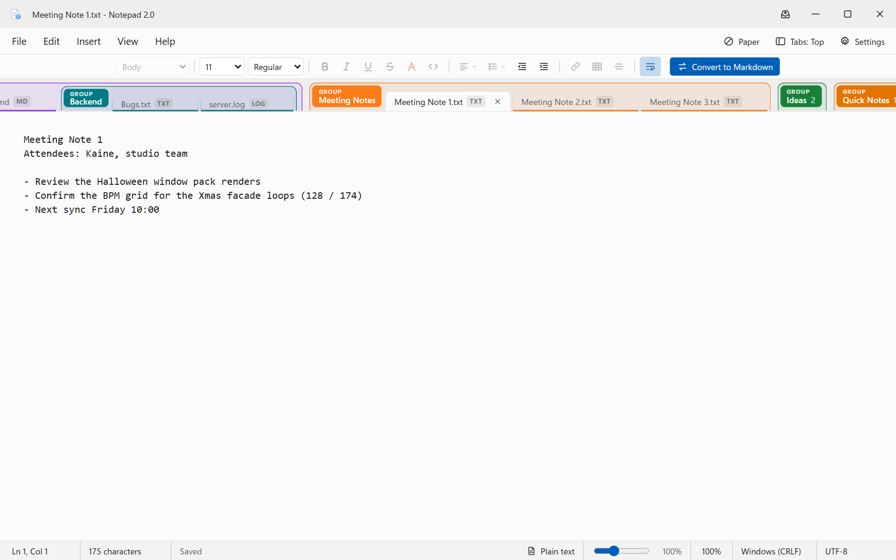
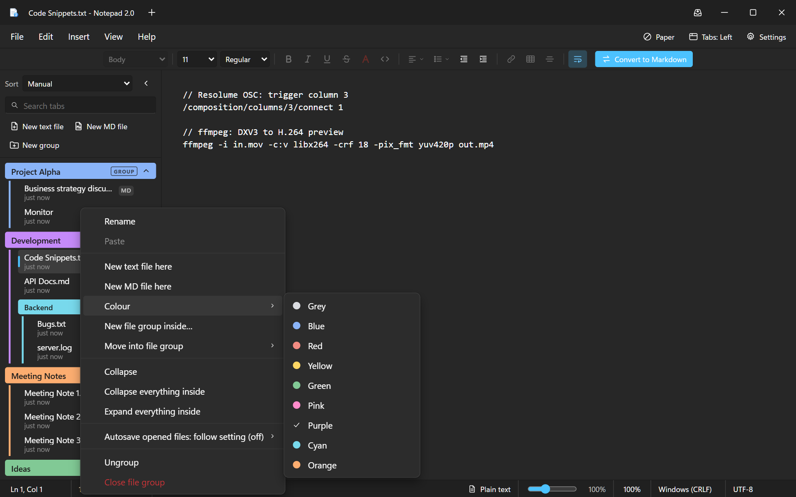
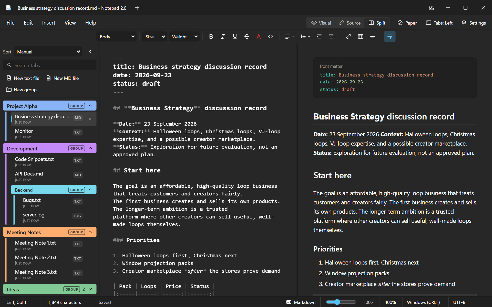
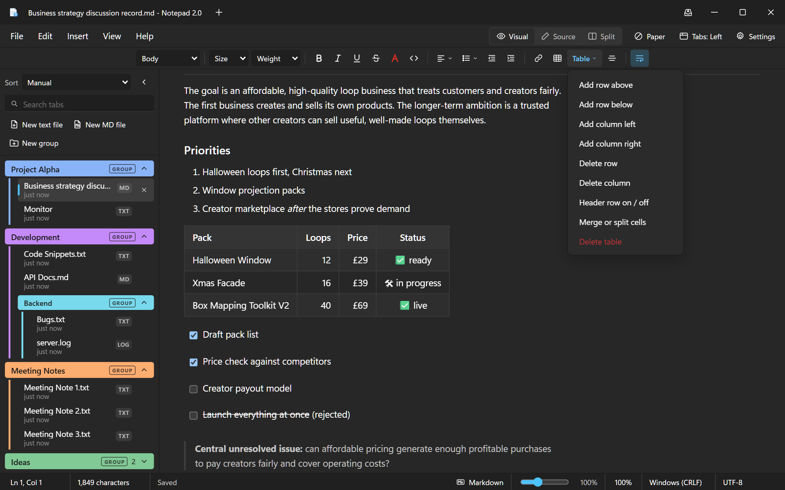
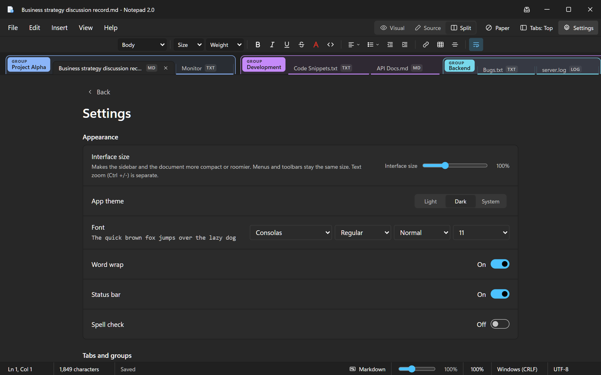

Notepad 2.0
The Windows 11 Notepad you know, with file groups, a Markdown editor you type straight into, viewers for spreadsheets, data, PDFs and Word, several windows and a Quick Note one keypress away.
Get started
Install, then your first five minutes
Setup takes a few seconds, installs for your user only (no admin password), and doesn't need a restart.
Install
- Run Notepad 2.0_0.1.0_x64-setup.exe (or the .msi).
- Open Notepad 2.0 from the Start menu. The first time, it offers a short tour.
- To open your .txt and .md files with it, or to replace notepad.exe, see Windows integration on page 7.
Seven things to try
1New text file: Ctrl+NStart typing. It autosaves until you choose where to keep it.
2New Markdown file: Ctrl+Alt+NIt opens in the Visual editor. Use the toolbar for headings, colours, lists and tables.
3Make a file groupRight-click a tab, then New file group…. Drag more files onto it.
4Change the layoutClick Tabs: Top (top right) for tabs on top, a sidebar, or a slim rail.
5Pick a paperClick Paper for Code, Lines or Grid, and set a page margin.
6Tear off a windowDrag a tab outside the window. It opens in a new window.
7Quick Note: Win+Alt+NFrom anywhere. Type, click away, it's saved.
?Take the tourHelp → Startup guide spotlights each part of the window in 13 steps.
Nothing is ever lost. Untitled notes and Quick Notes save as you type. Opened files save with Ctrl+S like Notepad, but unsaved edits survive a crash or reboot and come back with a banner.
Notepad 2.0 Quickstart2
The basics
It's still Notepad
Same menus, same shortcuts, same instant start. Plain text stays plain, and a file you haven't changed is never altered by a single byte.

Light theme, tabs on top, a plain .txt file. On a text file only the tools plain text can hold are active, and a Convert to Markdown button appears.
Everything Notepad does
- Find, Replace, Go to line, Print
- Date and time with F5
- UTF-8, UTF-16 and ANSI; CRLF or LF, shown in the status bar
- Font picker, word wrap, text zoom
Look and feel
- Light, Dark or System theme
- Interface size 75–150% from the status-bar slider. Hold Shift and press + / − outside the text to nudge it.
- Text zoom (Ctrl + / −) is separate
New here? Help → Startup guide is a 13-step spotlight tour of the window, offered the first time you start.
Notepad 2.0 Quickstart3
Organise
File groups, tabs and the sidebar
Keep related files together in coloured groups. Groups can sit inside groups, and ungrouped files always stay at the top.
Project Alpha
Development
Backend
Meeting Notes
Ideas

Right-click a group to rename it, add files, change its colour, nest a group inside, collapse everything, or set autosave for the whole group.
Layouts
- Tabs on top, joined to the page
- Sidebar on the left: drag its edge to resize
- Rail: a slim list of groups
Sort
Manual, Date modified, Date created, Name A–Z or File type. Sorting is a view: your own order is kept.
File actions
- Rename in place: double-click or F2. Saved files are renamed on disk, never over an existing file.
- Duplicate, Copy, Paste into another group. Copies are named Name (2).ext.
- Open in File Explorer
- Right-click → Colour tints a single tab
Notepad 2.0 Quickstart4
Write
Markdown you can type into
Three views of the same file. Switch with the buttons at the top right, or press Ctrl+Shift+V.
| View | What it's for |
|---|
| Visual | A true WYSIWYG editor. Type straight into the formatted document, like a word processor. |
| Source | The raw Markdown, with syntax highlighting. |
| Split | Source on the left, a live preview on the right: tables, task lists, footnotes, front matter, maths, Mermaid diagrams, highlighted code. |

Split view. Formatting Markdown can't express (underline, colour, alignment) is saved as the small HTML tags GitHub understands, so files look right there too.
Locked blocks. Front matter, maths, Mermaid and other raw HTML show as locked blocks in Visual so nothing is mangled. Double-click one to edit it in Source.
Notepad 2.0 Quickstart5
Write
Tables, inserts and paper
Click inside a table and a Table menu appears on the toolbar.

Add or delete rows and columns, toggle the header row, merge or split cells. Drag borders to resize. Cells hold formatted text and lists.
Insert menu
Page break, line break, image, table (with a size picker), link (Ctrl+K), horizontal line, date and time.
Paper
| None | A clean page |
| Code | Line numbers down the whole page |
| Lines | Ruled writing paper |
| Grid | Graph paper |
For every tab or per tab. Page margin (0–200 px) works in every view.
Code paper
Lines paper, with the slim rail
Notepad 2.0 Quickstart6
Go further
Windows, Quick Note and dictation
Several windows
- Drag a file, group or sub-group outside the window: it opens in a new window at the pointer.
- Drag between windows to move items, dropped exactly where you let go.
- Close a window and its files move into the window you used last. Nothing is lost.
- Restart and every window comes back where it was, the last one you used in front.
- Opening a file that's already open elsewhere brings that window forward.
Quick Note
Press Win+Alt+N anywhere, or click the tray icon. A small always-on-top note pops up above the tray and saves as you type. Your Quick Notes collect in a Quick Notes group in the main window.
Dictate
Click the microphone button in the Quick Note to dictate with Windows voice typing (the same as Win+H). Speak, and your words appear in the note.
Windows integration
In Settings → Windows integration:
- Default app for .txt and .md
- Replace notepad.exe (one admin prompt, reversible)
- Edit with Notepad 2.0 in File Explorer's right-click menu
- Start with Windows, quietly in the tray
Uninstalling removes all of these.
Notepad 2.0 Quickstart7
Open anything
Spreadsheets, data, pages, PDFs and more
Open a file and Notepad 2.0 picks the right viewer. Text files keep a View / Source / Split switch, so you can read them formatted and still edit the raw text.
| Files | Shown as |
|---|
| CSV, TSV | A grid with a sticky header; click a column to sort. Edit in Source. |
| XLSX, XLS, ODS | A grid per sheet with sheet tabs; values as Excel shows them. File → Save sheet as CSV… |
| JSON, YAML, XML | A collapsible tree. A file with a mistake opens beside its source with the error line. |
| TOML, INI, logs | Highlighted text; ERROR lines red, WARN amber. |
| HTML | The page with its own styling. Scripts never run. |
| Images, PDF, Word | Zoomable images; Edge's PDF viewer; Word as formatted text with Open in Word. |
JSON: source and tree side by side
Links go where they point. In your notes, a link to a file opens it in a tab and a link to a folder opens File Explorer there, e.g. [Art](../Art%20Refs/). In the Visual editor, Ctrl+click to follow a link. Insert → Link has File… and Folder… buttons.
Notepad 2.0 Quickstart8
Reference
Keyboard shortcuts
Every Notepad shortcut works as before. These are the ones worth learning.
| Files and tabs |
|---|
| Ctrl+N | New text file |
| Ctrl+Alt+N | New Markdown file |
| Ctrl+O | Open |
| Ctrl+S | Save |
| Ctrl+Shift+S | Save as |
| Ctrl+Alt+S | Save all |
| Ctrl+W | Close tab |
| Ctrl+Shift+W | Close window to the tray |
| Ctrl+Shift+G | New file group |
| F2 | Rename the current file |
| Ctrl+P | Print |
| Win+Alt+N | Quick Note, from anywhere |
| Editing and view |
|---|
| Ctrl+F | Find |
| Ctrl+H | Replace |
| Ctrl+G | Go to line |
| F3 / Shift+F3 | Find next / previous |
| F5 | Insert date and time |
| Ctrl+K | Insert link |
| Ctrl+click | Follow a link (Visual) |
| Ctrl+Shift+V | Visual → Source → Split |
| Ctrl+] / [ | Indent / outdent a list item |
| Ctrl++ / − / 0 | Text zoom in / out / reset |
| Shift++ / − | Interface size (outside the text) |
| Win+H | Dictate |
Where your notes are kept
- Files you open or save live wherever you put them, as ordinary .txt and .md files.
- Untitled notes, Quick Notes, groups, window layout and settings live in %APPDATA%\Notepad2\. Paste that into the File Explorer address bar to open it.

Settings: interface size, theme, font, tabs and groups, saving, Quick Note and Windows integration.
Notepad 2.0 Quickstart9